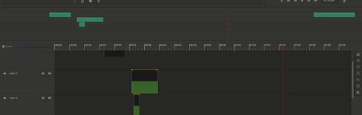

GSoC project @Pitivi~Cut Mode.
Let's quickly go over the proposed project :)
Pitivi ~Cut Mode
The Idea for this project is to have two timelines to ease certain types of tasks and increase productivity. This will essentially bring in a non-zoomable Timeline which will serve to ease the task of trimming, cutting, rearranging clips on the timeline in sync with the other timeline.

Benifits ?
Mostly, when we have a movie of a longer duration, we want to use the Zoom feature to see the whole timeline and scroll in-out to perform edits and rearrange clips. It consumes a lot of time which may be used productively somewhere, so to reduce user actions we have a zoom fitted timeline with small height layers so that all the layers and tracks are always visible. Now you only think about Zoom when you want to perform some precise edits, others on the Zoom fitted timeline ;).
From now, we will call the ZoomFitter timeline a Mini Timeline and the other simply a Timeline.
Longer duration timeline?
You can easily keep track having the reduced size elements on the Mini Timeline.
Many layers to work with?
Pitivi allows you to unlock all the views to a separate window, so If you have more layers, you may undock the views to separate screens and expand the Mini Timeline to make all the layers visible at the same time.

Let's dive deep!
Consider a case where we want to edit a portion of a timeline, for precise edits we have to zoom in at the required position, do the edits, zoom out, move to the next position, and so on for subsequent edits. This eats up a lot of precious time. The new global timeline allows the user to see the zoomed view as well as keep track of position in the global timeline at the same time. Now you can move anywhere in the timeline with a single click, preserving the zoomed view.

Mini Timeline also allows you to rearrange clips so, where you have a short clip of about a few seconds and you wish to relocate it, say from start to the end of the timeline, you would select a clip, zoom out the timeline and drag it to end, zoom in to come to the same state. Another way is to start dragging and use the over scroll mechanism and wait for your desired position. Neither of them is ideal. The new global timeline allows to quickly locate clips and drag them at any position since the entire duration is always in view.

That's it for now. I will be adding more things here as they come.
Half a month has passed, feeling great already.
Will update you soon,
Thanks!